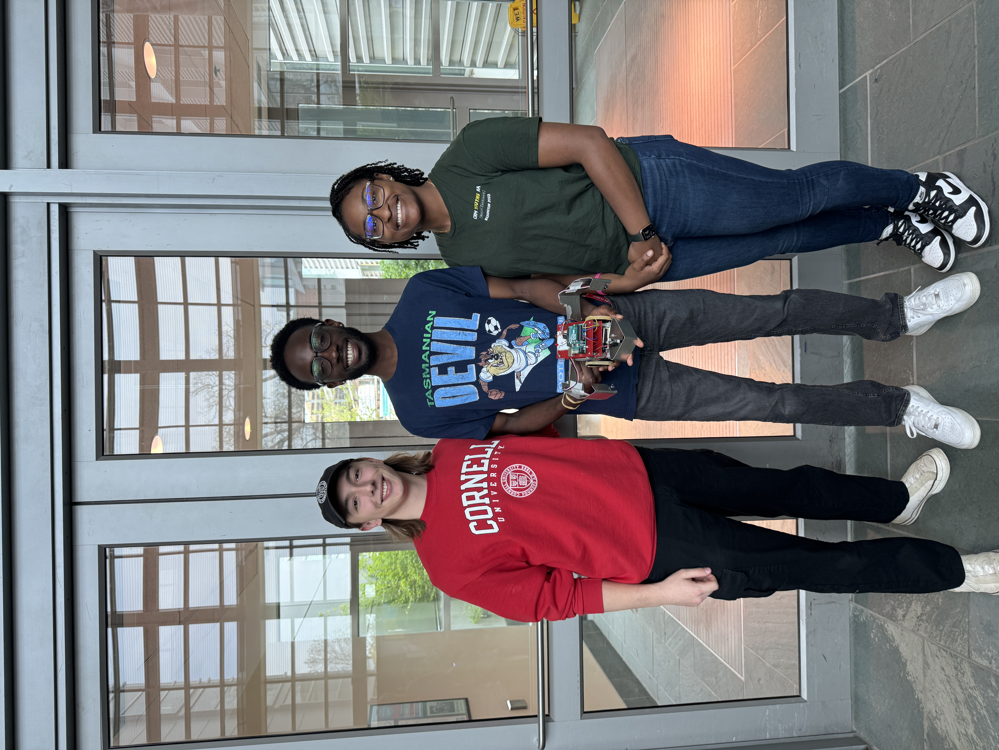

Our robot, Salamence! He is fierce
Our robot, Salamence! He is fierce
For the final project in MAE 3780: Mechatronics, we were tasked with creating a robot that ran on an ATmega microcontroller and autonomously collected blocks while competing against another robot from our class. All the code was written in C, and we used a color sensor to determine what side of the board we were on and prevent driving out of bounds with QTI sensors to detect the borders. I also designed and bent all sheet metal parts including the arms and plow. We ended up doing pretty well, defeating semifinalist robots and even the Grand Champion Robot designed and built by ASML Engineers!
 A picture of me and my wonderful teammates, Ethan and Chimdi!You can find our final report below, plus a video of our quart-final win!
 Video of one of our matches. Salamence is a beefy robot so he pushes the others around a bit.
Video of one of our matches. Salamence is a beefy robot so he pushes the others around a bit.